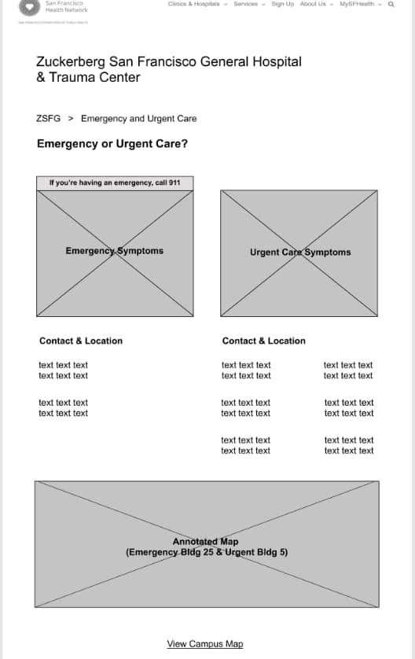

We imagined an ideal situation that will happen once we could solve the user's problem. There are a few touchpoints with the website that we can leverage to improve the site, such as the searching for treatments, location and maps of the facility.
Zuckerberg San Francisco General Hospital
View PrototypeOur awesome team &
design brief
This is a client project for the San Francisco General Hospital (ZSFG) conducted under the supervision of the General Assembly instructing staff.
Our team includes:
UX Designer
Information Architect
UX Designer
Interaction Designer
UX Designer
UI Designer
Company:
Zuckerberg San Francisco General (ZSFG) Hospital
Problem to solve:
New interstitial page
Format:
Responsive web, mobile web
Assignment Method:
Flow diagram, workshop, meeting with clients
Design Deliverables:
Information Architecture map, high-fidelity design for web and mobile web
03
weeks
01
webpage
03
members
The problem to solve for Zuckerberg San Francisco General Hospital
San Francisco Health Network is a community of 14 clinics, 2 hospitals and multiple programs that connects San Franciscans with the proper healthcare. Zuckerberg San Francisco General Hosipital (ZSFG) is one of the 2 largest branches under this network. However, users of its website and its patients through testing have initally failed to realize the relation between these 2 names.
Furthermore, results from testing shows a confusion in navigating the site, resulting in inefficiencies when looking for the right information, especially under time constraints such as emergencies.
Why is it necessary to establish an intersitial page for ZSFG?
The outcome of the mentioned test has been used as the foundational research, leading to a series of key points before starting on the design process.
- • Build understanding that ZSFG is a hospital within the San Francisco Health Network
- • Drive traffic to ZSFG for emergency needs and Family Birth center, 2 main services under this hospital
- • Clarify the difference between emergency vs. urgent care needs
- • Assist in directions and get people to where they need to go
We took a closer look at the user’s journey
Giving ‘Navigation’ the attention it deserves
From testing, users have complained that the complicated navigation on the ZSFG site did not do well with helping them find information, instead giving them more confusion and unanswered questions. Therefore, we pulled up all the labels at the current site, laid them out on the same page and took a close look. We then noticed some pain points:
- • There were many repetitive labels
- • Different labels direct to the same place
As for the navigation flow, the ZSFG website shows significant issues in organization:
- • Little emphasis on the main treatments of the hospital
- • Important features are hard to find
- • Information for the same categories are scattered throughout different pages
Laying out the site map of the current ZSFG site was horrific
Getting deep down with the Information Architecture
We decided to start the design process by establishing a rough IA sketch, which would play as a backbone for the interstitial site.
Our idea was to have the IA effectively reflect the layout of the buildings within the physical ZSFG campus, which we had a chance to visit in person. The IA map also implies the hierarchy of treatment services. For easy access, we also included the ZSFG campus map on the main nav bar, which previously was deeply hidden on some obscure page.
After the mapping, card sorting test was conducted to validate the ease of use of this IA. The result came out to be successful. 9/10 of our testers agreed that the flow is user intuitive.
Had a fun day exploring ZSFG campus

Came back with lots of ideas for the design
A rough sketch for the map

High level view of IA map
The hierarchy in services of ZSFG
Campus Map allows for easy access and use while on campus
High level IA reflects the physical ZSFG campus
From sketching the wireframes to final looks
After discussions with the director of ZSFG, we could not proceed with the sketch for the homepage. It turned out that SFHN already has its established style guide. Being a part of the SFHN site, our interstitial page had to follow its look and feel, so we made the changes accordingly.
Significant traits that were considered the most important of the mini-site:
- • Horizontal navigation bar for ease of use
- • 3/4 columns set up, with secondary important info on the right side for indication of hierarchy in info
- • Campus maps are easily found at prime and appropriate locations
Drastic change in front page

Setting up Emergency care and Urgent Care side by side for quick differentiation
 Preview of campus map before downloading the PDF
Preview of campus map before downloading the PDF
Bringing the design to mobile and more
According to a study, more and more people own a mobile device than a computer or laptop. Therefore, moving the site to a mobile friendly interface is a necessity. Even though this is not the priority for the deadline of this project, our team also did a quick walk-through of what our vision of the ZSFG site on mobile screen would look like.
ZSFG Mobile screens, from left to right: Homepage screen, Full look of homepage screen, map page
What has our clients & potiential users said about the design?
Potential users’ reactions: Positive
9/10 of our tested users have successfully passed the test of finding the appointed designation in shorter times than before the change. They also expressed their fondness for the new look of the mini site.
Client’s reaction: Positive yet there’s room for improvement
After the presentation, the client was impressed with the amount of research putting into the design process within 3 weeks. The end exceeded her expectations, although she did express regrets that not all the details of this design will be applied to the website, considering the cost and time budget available at the time.
If that then this...
Some of the next steps we considered:
- • Simplify the design, make it as one site
- • Reorganize the order of logos of 2 hospitals to avoid confusion
- • Add breadcrums for easy navigation on the site
- • Interactive map so that users can have a flawless experience finding the physical locations of the facilities
- • Additional testing with more potential users and MediCal members
- • Develop the site for fitting into the San Francisco government’s style guide (future end goal of client)